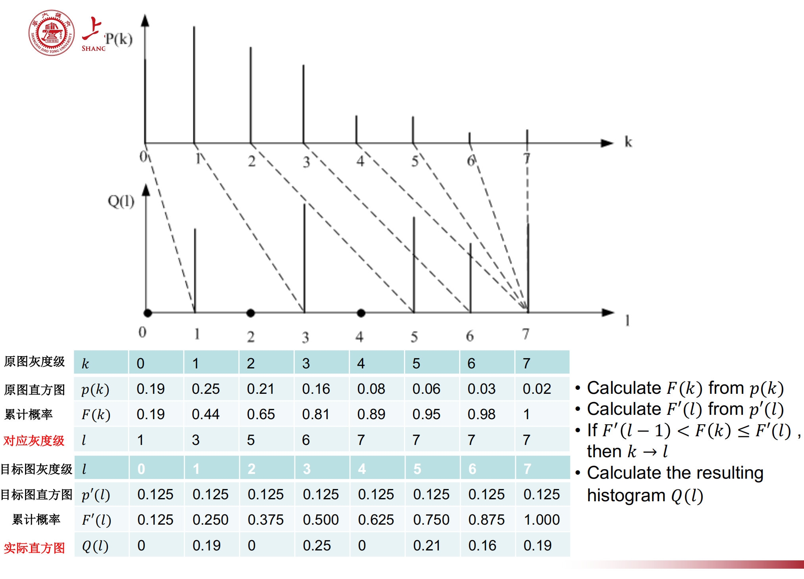
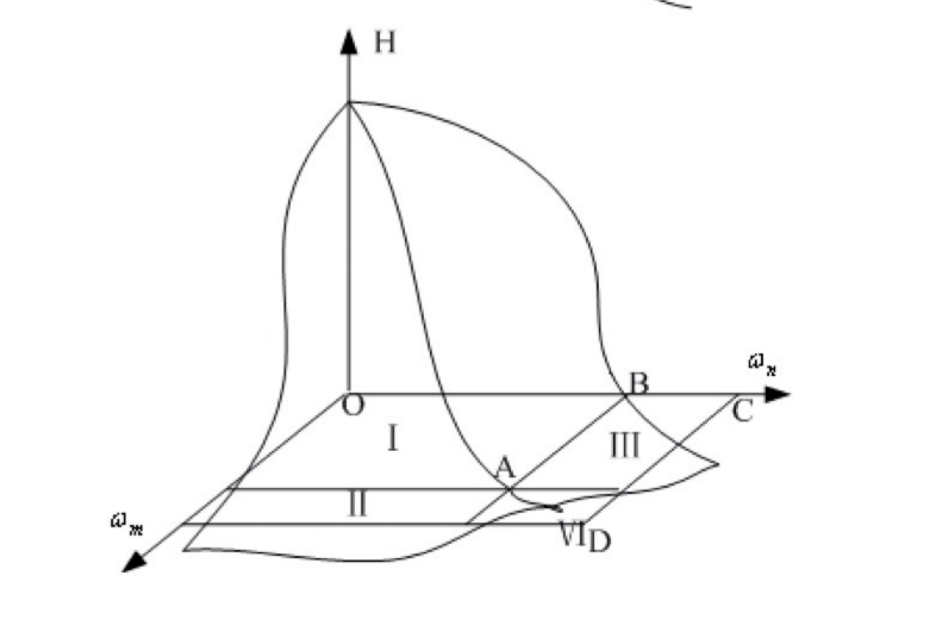
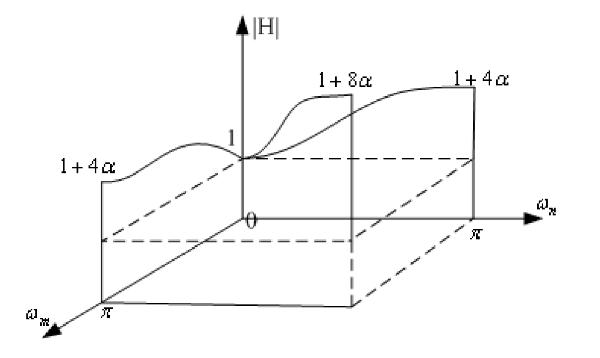
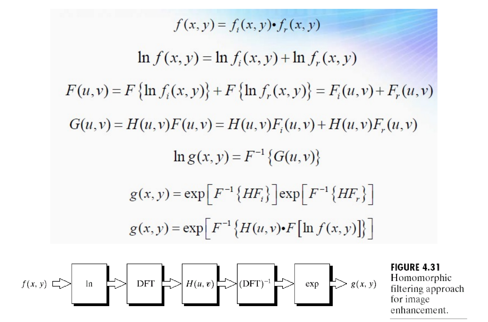

数字图像处理(4)：图像增强
Last updated on December 30, 2025 pm
这是SJTU-CS3324《数字图像处理》课程的知识点整理系列。本文整理部分为“第 4 章：图像增强”。
介绍
- 图像增强的常见应用: 对比度增强、边缘增强、去噪、伪彩色 (pseudo color)
- 图像增强的方法: 灰度变换、空间域滤波、频率域滤波、同态滤波、伪彩色
灰度级增强 (Gray Level Enhancement)
这类方法也叫点变换 (Point Transformation)，输出像素值仅取决于对应的单个输入像素值。核心工具是直方图 (Histogram)。
A. 直方图 (Histogram)
- 定义: 直方图是图像灰度级的分布函数
- 对于一张数字图像，它统计了每个灰度级（如 0 到 255）所拥有的像素数量
- 通常将直方图进行归一化，得到每个灰度级出现的频率
- 作用: 直方图是许多空间域处理技术的基础
- 通过观察直方图的形状，我们可以直观地判断图像的质量
- 局限性: 直方图只包含灰度值的统计信息，不包含任何像素的空间位置信息
- 两张内容完全不同但灰度分布相同的图像，可以拥有完全相同的直方图（多对一）
B. 灰度级的线性与非线性变换 (Linear & Nonlinear Transformation of Gray Levels)
这是最简单的一类图像增强方法，属于点变换。其核心是对图像中的每一个像素应用一个相同的灰度变换函数 ，将输入的灰度值 映射到一个新的输出灰度值 。
线性变换 (Linear transformation)
- 思想: 使用线性函数或分段线性函数 (Piecewise-linear transformation) 作为变换函数
- 功能: 通过拉伸或压缩感兴趣的灰度区间，来调整图像的对比度
- 这个过程也称为对比度拉伸 (Contrast Stretching)
- 例子:
- 一个典型的分段线性函数可以将一个较窄的输入灰度范围映射到一个更宽的输出范围，从而提高该区域的对比度
- 将灰度值反转 l = 255 - k，可以得到图像的底片效果，也是一种线性变换
非线性变换 (Nonlinear transformation)
- 思想: 使用非线性函数作为变换函数
- 可以通过查找表 (Look-Up Table, LUT) 进行映射，LUT 存储了所有可能的输入灰度值对应的输出值
- 功能: 可以实现更复杂的灰度映射，如对数变换、伽马校正等
- 伪轮廓 (False Contour): 如果变换函数 导致了输出灰度级出现大的跳跃，即原本连续变化的灰度区域被映射成了几个离散的、差别很大的灰度级，就会在视觉上产生不存在的轮廓，即伪轮廓
C. 直方图均衡化与规定化 (Histogram Equalization & Histogram Specification)
这是基于直方图的、更强大和自动化的灰度变换技术。
直方图均衡化 (Histogram Equalization)
- 思想:
- 目标: 找到一个灰度变换函数，使得处理后的图像其直方图尽可能地均匀（平坦）
- 理论依据: 均匀分布的直方图拥有最大的信息熵
- 这意味着图像的灰度层次最丰富，人眼可以从中获取最多的信息
- 功能: 这是一种自动的、非线性的对比度增强方法
- 它能够有效地将集中在某个区域的灰度级扩展到整个灰度范围，对于整体偏暗、偏亮或对比度不足的图像有显著的改善效果
- 但会可能发生灰度级的合并，导致层次感减少
- 变换函数: 变换函数 是原始图像灰度级的累积分布函数 (Cumulative Distribution Function, CDF)
- 对于连续灰度级，其计算公式为:
- 对于离散灰度级，其计算公式为:
其中 是总灰度级数（如 256）
- 对于连续灰度级，其计算公式为:
直方图规定化 (Histogram Specification)
- 思想: 均衡化的推广；它不是简单地将直方图变得平坦，而是将其变换成用户指定的任意形状
- 直方图均衡化是直方图规定化的一个特例
- 功能: 提供更精细的控制，可以使处理后的图像具有特定的灰度分布风格
- 例如，让一张白天拍摄的照片看起来像黄昏时拍摄的
- 实现步骤:
- 计算原始图像的直方图 及其累积直方图
- 计算目标直方图 及其累积直方图
- 对于原始图像的每一个灰度级 ，在目标累积直方图 中寻找一个 ，使得 的值与 的值最接近
- 通常是
- 建立从 到 的映射关系
- 应用这个映射来变换整个图像
- 例题: 离散灰度级下的直方图规定化


空间域图像滤波 (Image Filtering in Spatial Domain)
这类方法输出像素值取决于其邻域 (Neighborhood) 内的一组像素。核心工具是掩模/核/滤波器 (Mask/Kernel/Filter)。
- 思想: 对于图像中的任意一点 ，其处理后的像素值 由以该点为中心的邻域内的像素值共同决定
- 定义一个作用于像素的算子 来处理图像:
- 这个算子 在图像上移动，逐点计算输出值
- 使用更大的邻域可以实现更复杂和灵活的处理
- 定义一个作用于像素的算子 来处理图像:
- 掩模/核 (Mask/Kernel/Filter): 在实际操作中，这个邻域算子 通常是一个预定义的小尺寸二维数组，称为掩模
- 掩模内的系数值决定了滤波的具体任务
- 典型任务: 图像平滑 (Image Smoothing) 、图像锐化 (Image Sharpening)
- 线性滤波与卷积:
- 线性空间滤波的过程，就是将掩模在其中心像素上滑动，然后将掩模系数与其覆盖的邻域像素值进行加权求和
- 这个滑动并加权求和的操作，在数学上就是卷积 (Convolution)
- 滤波的分类:
- 线性滤波 (Linear Filtering): 基于加权求和，如均值滤波、高斯滤波
- 非线性滤波 (Nonlinear Filtering): 不基于加权求和，如中值滤波
- 自适应滤波 (Adaptive Filtering): 滤波器（掩模系数）本身是变化的，会根据邻域的局部特性（如均值、方差）进行调整
A. 空间域图像锐化 (Image Sharpening in Spatial Domain)
- 思想: 图像锐化的核心是突出图像的细节和边缘
- 从数学上看，图像的边缘和噪声等不连续部分对应于灰度值的剧烈变化，这可以通过微分（导数） 来检测
- 一阶导数在边缘处产生较宽的峰值，二阶导数在边缘处产生零交叉和一对峰谷，锐化就是通过增强这些微分响应来实现的
- 功能:
- 增强图像中的边缘和细节，使其看起来更清晰
- 应用场景包括电子印刷、医学成像、工业检测等
- 离散实现 (拉普拉斯算子):
- 二阶微分（拉普拉斯算子 ）对细节的响应更强，是常用的锐化工具
- 锐化的过程是将原始图像减去其拉普拉斯变换的结果：
- 二阶微分（拉普拉斯算子 ）对细节的响应更强，是常用的锐化工具
- 锐化掩模: 将上述公式合并，可以得到一个单一的锐化掩模
- 特点:
- 这是一个线性滤波过程
- 掩模的所有系数之和为 1，可以保持图像整体亮度不变
- 主要缺点是会放大图像中的噪声
B. 空间域图像平滑 (Image Smoothing in Spatial Domain)
- 思想: 图像平滑的核心是模糊图像
- 通过对邻域内的像素值进行平均化 (Averaging)，来抑制图像中与邻域尺寸相比过小的细节或噪声
- 功能:
- 模糊: 作为预处理步骤，用于去除不重要的微小细节，或连接断裂的线条
- 降噪 (Noise Reduction): 通过平均化来抑制噪声的影响
- 特点:
- 主要缺点: 会模糊有用的细节和边缘
- 关键: 在有效降噪和保留重要细节之间取得平衡
1. 邻域像素平均 (Pixel averaging in a neighborhood)
- 方法: 最简单的方法，将邻域内所有像素值的平均值作为中心像素的新值
- 对应的掩模（均值核）所有系数相等，且总和为 1
- 效果: 噪声强度可以被降低为原来的 （ 为邻域像素数）
- 核越大，降噪效果越好，但图像也越模糊
2. 带阈值的邻域平均 (Pixel averaging in a neighborhood with a threshold)
- 方法: 一种自适应方法，仅当中心像素与其邻域均值的差大于某个阈值 时，才进行平均化操作
- 作用: 用于在抑制强噪声的同时，保留图像的平坦区域
- 较大的噪声像素会被抑制，但是较小的噪声像素会被保留
3. 半邻域平均 (Pixel averaging in a half neighborhood)
- 思想 (Idea):
- 目标: 减少标准邻域平均（如均值滤波）所导致的边缘模糊
- 核心逻辑: 在进行平均之前，先判断当前像素邻域内是否存在边缘
- 如果窗口内没有边缘: 则像常规一样，对全部 9 个点（3x3 邻域）进行平均
- 如果窗口内存在边缘: 则只对边缘一侧的像素进行平均，即取中心像素 和与它在边缘同一侧的 5 个邻域像素，共 6 个点进行平均
- 实现步骤:
- 定义方向: 在一个 3x3 的窗口中，预先定义 8 个可能的边缘方向
- 计算均值: 对于每个方向，将 9 个邻域点分为两组（一组 3 个点，一组 6 个点），并分别计算它们的均值 和
- 判断边缘方向: 找到使得 差值最大的那个方向，这个方向就是最可能的边缘方向
- 决策:
- 如果这个最大的差值 小于或等于一个阈值 ，则认为窗口内没有边缘，对全部9个点求均值（）
- 否则，认为窗口内存在边缘，并将边缘方向确定为差值最大的那个方向，取该方向对应的6点均值 作为最终的输出值
4. 使用局部统计的平均 (Pixel averaging in the neighborhood using local statistics)
-
方法: 更高级的自适应方法，根据邻域的局部统计量（如均值、方差）来决定如何进行平均
- 若方差较大，使用邻域 8 点平均；若方差较小，使用邻域 5 点平均
其中 包括 以及值最接近的 4 个 ， 是 之间的常数
频率域图像滤波 (Image Filtering in Frequency Domain)
- 思想: 空间域滤波是通过卷积来实现的，而在频率域，根据卷积定理，这一复杂操作可以被简化为简单的逐点乘法
- 基本流程: Pixel domain -> Frequency domain -> Pixel domain
- 傅里叶变换 (DFT): 将原始图像 变换到频率域，得到其频谱
- 滤波 (Filtering): 设计一个滤波器函数 ，将其与图像频谱 进行逐点相乘，得到滤波后的频谱
- 反傅里叶变换 (IDFT): 将滤波后的频谱 逆变换回空间域，得到最终处理后的图像
A. 平滑掩模与低通滤波器 (Smoothing Mask & Lowpass Filter)
- 思想: 图像平滑的目的是模糊图像、去除噪声，这对应于衰减图像中的高频成分
- 因此，平滑滤波器本质上就是低通滤波器 (Lowpass Filter)
- 频率域滤波器: 对 3x3 均值平滑掩模进行 Z 变换，可以得到其在频率域的表达式
- 这个函数的形状是一个低通滤波器：在频率原点（低频）处有最大值1，随着频率 和 的增加，其值会衰减

B. 锐化掩模与高频提升滤波器 (Sharpening Mask & High-Boost Filter)
- 思想: 图像锐化的目的是增强边缘和细节，这对应于增强图像中的高频成分
- 因此，锐化滤波器本质上是高通滤波器 (Highpass Filter)
- 频率域滤波器: 对锐化掩模进行 Z 变换，可以得到其在频率域的表达式
- 这个函数的形状是一个高频提升滤波器：
- 在频率原点（低频）处，，它不衰减直流分量和低频分量。
- 随着频率的增加，整个函数 的值也随之增大，在最高频处达到最大值
- 具有“在保持低频的同时提升高频”的特性，即高频提升，它在锐化边缘的同时，也保留了图像的背景信息
- 这个函数的形状是一个高频提升滤波器：

中值滤波 (Median Filtering)
- 思想: 中值滤波是一种非线性的空间滤波方法，它基于对邻域内像素灰度值的排序
- 属于顺序统计滤波器 (Order-statistics filter) 的一种
- 定义: 中值滤波器的输出 是其邻域 S 内所有像素 灰度值的中位数 (Median)
- 主要功能与特性: 用于降噪
- 对脉冲噪声（椒盐噪声）有特效:
- 椒盐噪声（salt-and-pepper noise）表现为图像中孤立的纯白（255）或纯黑（0）像素点
- 在对邻域像素进行排序时，这些极端的噪声值通常会位于排序序列的两端，而中位数则取自序列的中间位置，因此能够非常有效地消除这些噪声点，而几乎不受其影响
- 更好的边缘保持能力: 与同尺寸的线性平滑滤波器相比，中值滤波在去除噪声的同时，能更好地保护图像的边缘细节（不会模糊）
- 因为它不会像均值滤波那样将边缘两侧的像素值进行平均，从而导致边缘模糊
- 对脉冲噪声（椒盐噪声）有特效:
- 滤波窗口/邻域形状 (Shapes of windows): 中值滤波的邻域窗口不局限于传统的方形，也有十字形窗口等
- 不同的窗口形状会产生不同的滤波效果，尤其是在处理图像的线条和角点等细节时
- 加权中值滤波 (Weighted Median):
- 思想: 在计算中位数之前，为邻域内的每个像素赋予一个权重，权重越大的像素在排序时被“复制”相应次数
- 功能: 允许给予邻域内的某些像素（如中心像素）更高的重要性，从而在去噪和细节保护之间进行更精细的权衡
- 多窗口中值滤波 (Multi-Windows Median Filter):
- 思想: 这是一种自适应的中值滤波方法，旨在进一步改善边缘保持效果。
- 步骤:
- 同时使用多个不同形状的窗口，并分别计算它们的中值 ,
- 计算一些参考值，如邻域均值
- 通过比较这些中值与中心像素值 的差异 ，来判断中心像素是否处于边缘或噪声点
- 根据判断结果，自适应地选择一个最合适的值（, 或其最大/最小值）作为最终的输出
- 目的: 通过更复杂的逻辑判断，力求在平滑噪声的同时，最大限度地避免跨越真实边缘进行滤波
其他图像增强方法 (Other Methods of Image Enhancement)
A. 同态滤波 (Homomorphic Filtering)
- 思想: 该方法基于光照-反射模型 (Illumination-Reflectance Model)
- 一幅图像 可以表示为光照分量 和反射分量 的乘积:
- 分量特性:
- 光照分量 : 通常由光源决定，在空间上变化缓慢，对应于图像的低频成分；不均匀的光照会产生阴影等效果
- 反射分量 : 由物体本身的材质决定，包含了物体的细节和边缘，在空间上变化剧烈，对应于图像的高频成分
- 处理流程: 取对数 -> 傅立叶变换 -> 滤波（衰减低频并增强高频）-> 反傅立叶变换 -> 取指数

- 功能:
- 用于校正由不均匀光照引起的图像问题，例如去除大面积的阴影
- 能同时压缩亮度范围和增强对比度
B. 基于小波的图像去噪 (Wavelet-Based Image Denoising)
- 思想: 这是一种基于小波变换的图像平滑/去噪方法
- 小波变换能将图像信号和噪声有效分离到不同的子带系数中
- 通常，图像的主要能量（结构信息）集中在少数几个大的小波系数上，而噪声则表现为大量小的系数，均匀分布在各个细节子带中
- 功能: 图像去噪
- 特点: 由于小波变换的时频局部化特性，它可以在去除噪声的同时，更好地保留图像的边缘和细节，避免了传统低通滤波带来的过度模糊问题
- 典型方法: 通过对高频细节子带的小波系数进行阈值化 (Thresholding) 来实现去噪
- 硬阈值 (Hard Thresholding): 将绝对值小于某个阈值的系数直接置零，保留大于阈值的系数不变
- 软阈值 (Soft Thresholding): 将绝对值小于阈值的系数置零，同时将大于阈值的系数向零进行收缩
C. 伪彩色图像处理 (Pseudocolor Image Processing)
- 思想: 利用人眼对颜色的分辨能力远强于对灰度分辨能力的特性
- 伪彩色处理根据一定的规则，将灰度图像中的每一个灰度值映射到一个特定的彩色值
- 功能: 增强可视化和可解释性
- 它能将灰度图像中人眼难以察觉的细微亮度差异，用鲜明的颜色对比突显出来，便于观察和分析
- 实现: 将输入的单通道灰度图像 分别通过三个独立的变换函数，生成红、绿、蓝三个颜色分量，最后合成为一幅伪彩色图像
D. 假彩色图像处理 (False Color Image Processing)
- 思想: 假彩色处理的对象是多光谱图像 (Multispectral Images)，即在多个不同波段下拍摄得到的一组图像
- 它将这些人眼不可见的波段信息，映射到人眼可见的 RGB 三个颜色通道上
- 功能: 可视化多维数据
- 常用于遥感、卫星成像等领域，以突出显示特定的地物信息
- 实现: 将多张独立的单色图像（如不同光谱波段的图像）经过各自处理后，再将它们组合并分别映射到最终输出的 RGB 三个颜色通道上
双边滤波 (Bilateral Filter) 与 非局部均值滤波 (Nonlocal Means Filter)
- 盒状均值 (Box Average): 一个像素的新值，就是其邻域内所有像素值的算术平均值
- 缺陷: 产生视觉瑕疵
- 轴对齐的条纹 (Axis-aligned streaks): 由于窗口是方形的，其影响在水平和垂直方向上是割裂的，容易产生不自然的条纹状模糊
- 块状结果 (Blocky results): 窗口内所有像素的权重都完全相同，边界是硬的，这使得模糊效果看起来不平滑，有块状感
- 缺陷: 产生视觉瑕疵
- 高斯模糊 (Gaussian Blur): 同样是邻域加权平均，但权重不再是均等的
- 权重由一个高斯函数决定，使得离中心像素越近的邻域像素，其权重越高；反之，越远的像素权重越低
- 高斯模糊通过两个策略解决了盒状均值的缺陷：
- 使用各向同性的窗口 (Isotropic window): 高斯函数的衰减在所有方向上都是一致的（像一个圆形），避免了轴对齐的瑕疵
- 使用平滑衰减的窗口 (Smooth falloff): 权重从中心向外平滑地减小到零，而不是像盒状窗口那样在边界处突变，这使得模糊效果非常自然、平滑
- 缺陷: 和盒状均值一样，它只考虑空间距离，同样会跨越边缘进行模糊，导致图像细节损失
双边滤波 (Bilateral Filter)
- 思想：为了解决边缘模糊问题，双边滤波在加权过程中增加了一个条件
- 一个邻域像素 要想对中心像素 的最终值有显著贡献，必须同时满足两个条件：空间上足够近，并且像素值足够相似
- 这个原理也体现在其名称 Bilateral 上，即同时考量空间域和值域
- 其关键洞见是“不跨越边缘进行平均” (No Averaging across Edges)
- 实现: 双边滤波仍然是加权平均，但每个邻域像素 的权重由两个独立项的乘积决定
- 空间权重 (): 这是基于空间距离的高斯权重，它确保了只有附近的像素才被考虑
- 值域权重 (): 一个基于像素值差异 的高斯权重，如果像素值差异很大（即 和 位于边缘的两侧），这个权重会趋近于零，从而有效地阻止了 对平均过程的贡献
- 特点: 保持边缘 (Edge-Preserving)、非线性 (权重依赖于图像内容)、空间可变的核、计算成本高
- 用途: 去噪，可以在平滑平坦区域噪声的同时，保持边缘的锐利
非局部均值滤波 (Nonlocal Means - NL-Means)
- 思想: 从双边滤波中“相似的像素值”推广到了“相似的邻域”
- 两个像素 和 之间的权重，由它们整个周围小块区域（patch）的相似度来决定
- 如果两个像素处于图像中任何位置（因此称为非局部）但其视觉上下文相似，它们就可以相互贡献，共同决定最终的像素值
- 实现:
- 对于目标像素 ，将其局部邻域（小块）定义为一个向量
- 对于图像中任何其他像素 ，也定义其邻域向量
- 用于加权像素 的强度 的权重，由这两个邻域向量 和 之间欧氏距离平方的高斯函数决定
- 注意，这里的空间项 消失了，物理上的邻近不再是决定权重的主要因素，邻域块的相似性才是一切
- 特点:
- 卓越的去噪效果: 通过比较整个邻域块，NL-Means 对噪声的鲁棒性要强得多
- 优秀的纹理和细节保持能力: 它在对纹理区域去噪时表现极佳，因为它可以在图像的其他地方找到相似的干净纹理块来进行平均
- 瑕疵更少: 与各向异性扩散甚至双边滤波相比，NL-Means 能产生更锐利的结果，并且显著减少了“阶梯效应”或“分段常数”类的瑕疵
- 计算成本更高: 比较每个邻域块与所有其他邻域块的相似性，计算量极其巨大，尽管存在许多加速算法
- 用途:
- 去噪: 图像锐利、噪声低、瑕疵少
- 图像分解: 可以将图像分解为一个大尺度的结构层和一个小尺度的细节层
- 这对于色调管理 (Tone Management) 和风格化 (Stylization) 等高级编辑非常有用
- 闪光灯/无闪光灯图像融合、计算摄影等领域
参考资料
本文参考上海交通大学电子工程系《数字图像处理》课程 CS3324 闵雄阔老师的 PPT 课件整理。
数字图像处理(4)：图像增强
https://cny123222.github.io/2025/10/30/数字图像处理-4-：图像增强/